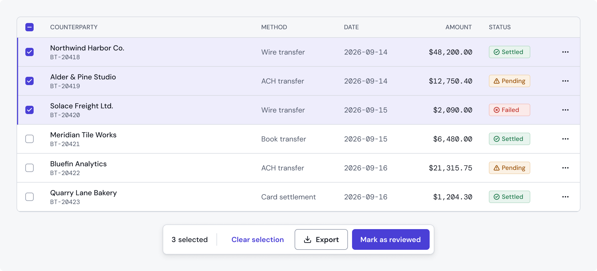
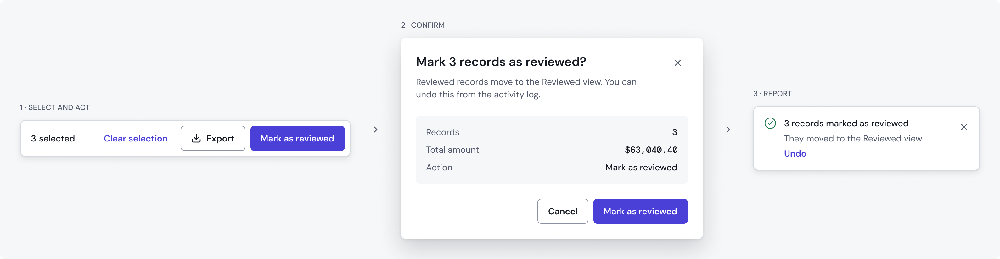
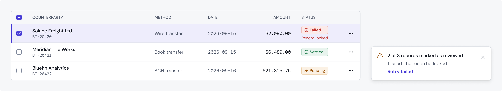
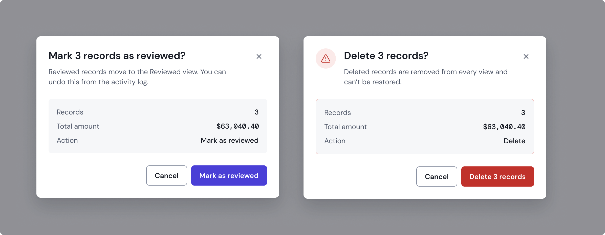
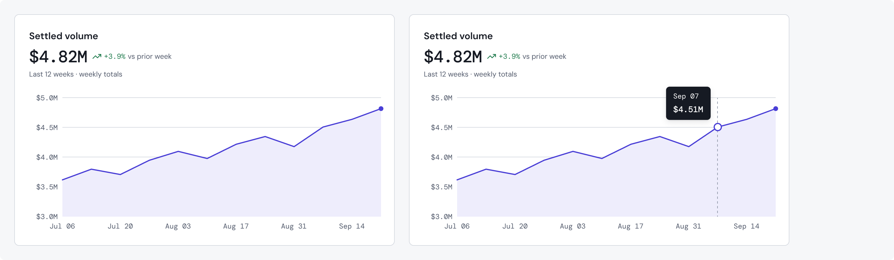

Turning one-by-one operations into safe bulk actions
Operations agents processed payment requests and account locks one account at a time. I designed the servicing platform they work in and the bulk actions that replaced that work.
- Role
- Product design, from workflow mapping to shipped UI
- Team
- 2 designers, ~8 engineers, Director of Product
- Timeline
- 2023–2025
- Users
- 40–50 operations and underwriting staff
Visuals are reconstructions built with Kestrel UI, a fictional brand with fictional data. They show the principles of the work, not the company’s actual screens.


Context
Servicing a single small-business loan meant jumping between separate tools: account summaries, requests, documents and cash-flow analysis each lived in their own place. Quantum Hub brought them into one platform, and I designed its UI foundations.
The problem
Agents handled around 70 accounts a day (my estimate), and payment requests and account locks had to be processed one by one. The old tools also communicated poorly what would happen, what had failed and what an agent was allowed to do.
One account at a time, then all at once
Before, repeated for every account
- Open the account
- Review it
- Act on it
- Confirm
- Go back to the list
After, once per batch
- Select the accounts
- Act onceOne bulk action
- Confirm
- Review the resultFailures listed
How I worked
I interviewed and observed operations agents directly, and ran sessions with operations stakeholders to map how they actually worked, then prioritized by how often each task happened. Ongoing feedback also came through operations managers, and our design team turned those findings into its own tickets.
Decisions
Select, then act
Agents choose many accounts in the table and run a single action, instead of opening each record.
Ask before, report after
Every bulk action asked for confirmation before running and reported the result after, so agents could verify what they were about to change and what actually changed.


Failures stay visible
When some accounts failed, the result listed which ones, instead of reporting a single success or a single error for the whole batch.
Permissions, surfaced
Actions an agent couldn’t perform were disabled, with a tooltip explaining the restriction.
Outcome
- Bulk actions replaced one-by-one processing for payment requests and account locks, and shipped.
- The Director of Product credited them with significant efficiency gains in servicing workflows.
What I’d do differently
Measure time per task before and after launch. The gain was clear to the people using it, but I can’t put a number on it.
The shipped version also left room to improve, and I explored the next iteration in Kestrel UI:
- Say why, and let agents retry. Failed accounts showed a general error. Each failure should state its reason and offer to retry only the failed ones.
- Friction where it matters. Locking an account used the same confirmation as any other action. High-risk actions deserve a Risk modal that the backdrop can’t dismiss, with focus starting on Cancel.
- Explain restrictions in place. Tooltips carried a generic permission message. The reason, and who can unblock the action, should be visible without hovering.




Related work
For ~30 underwriters I designed Cash Flow Analysis and Pre-Underwriting, including an interactive trend chart I proposed and prototyped; it shipped and engineering recognized it in a demo.


Next case study